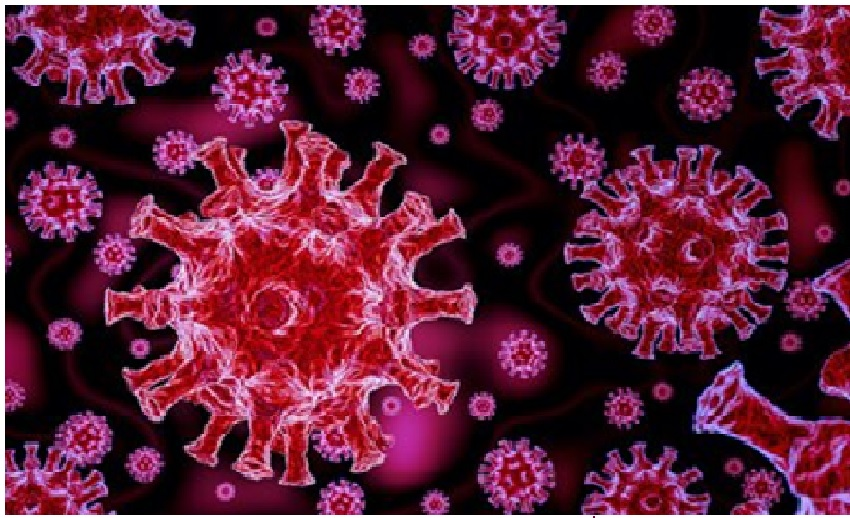

A Covid-19 é uma doença causada pelo coronavírus, familia de vírus que causam infecções respiratórias, apresenta quadro clinico que vai desde resfriados comuns à quadros respiratórios graves.
Os sintomas mais comuns são:
- Dor de garganta
- Cansaço
- Febre
-Tosse
-Coriza
-Falta de ar
Perda de olfato e/ou paladar
A transmissão acontece de uma pessoa doente para outra ou por contato próximo por meio de:
- Aperto de mão;
- Gotículas de saliva;
- Espirro;
- Tosse;
- Catarro;
- Objetos ou superfícies contaminadas, como celulares, mesas, maçanetas, brinquedos, teclados de computador etc.
- Evite circulação desnecessária nas ruas, estádios, teatros, shoppings, shows, cinemas e igrejas. Se puder, fique em casa.
- Lave com frequência as mãos até a altura dos punhos, com água e sabão, ou então higienize com álcool em gel 70%.
- Utilize máscaras caseiras ou artesanais feitas de tecido em situações de saída de sua residência.
-Se estiver doente, evite contato físico com outras pessoas, principalmente idosos e doentes crônicos.
-Não compartilhe objetos de uso pessoal, como talheres, toalhas, pratos e copos.
A melhor forma de saber se você foi infectado pelo novo Coronavírus é realizar uma avaliação médica. Para auxiliar no diagnóstico, existem alguns exames que são realizados em laboratórios de confiança, hospitais ou na rede pública de saúde.
Os pacientes mais suscetíveis às complicações do novo Coronavírus, são idosos acima de 60 anos, grávidas e pessoas que possuem doenças crônicas como diabetes, asma e hipertensão.
De acordo com o Ministério da Saúde até o dia 13 de maio de 2020 foram resgistrados 188.974 casos confirmatos de Covid-19 e 13.149 óbitos.